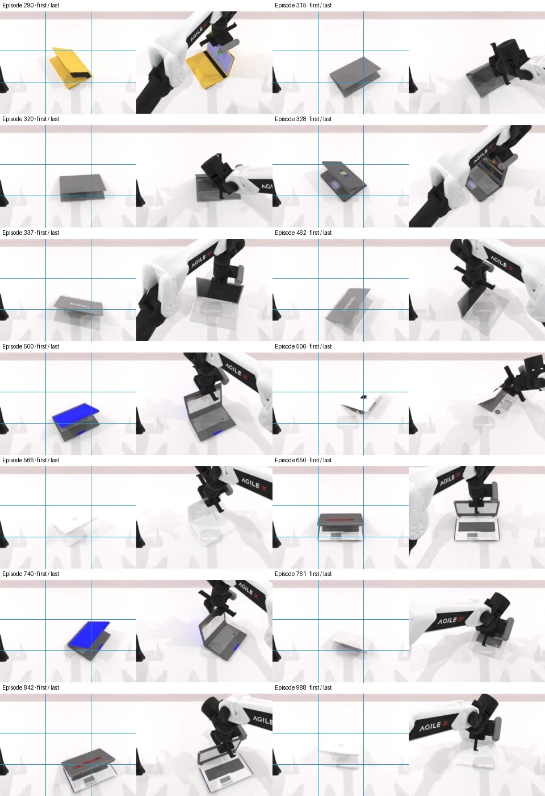

Method at a glance
How it works
- 01SpecifyDefine the task, action phases, and required start/end states.
- 02Generate & reviewAgent workflows produce and check demonstration material.
- 03Compose contextSelect compatible human-video and action clips.
- 04Evaluate transferRun the same robot task under controlled context conditions.
Project workflow schematic.
The research question
At TRESP Lab, I first explored transferring skill and memory mechanisms from LLM agents to VLA policies in August 2026. The limitations of that approach motivated a shift to RICL / Zero-WAM in September, focusing on what a robot can learn directly from demonstration context.
A human demonstration specifies more than an object name: it conveys action order, contact, movement, and the intended final state. My RICL project asks how much of that information can be reused when the target robot task changes. Instead of requiring one exact human demonstration for every scene, the longer-term objective is to construct appropriate visual guidance from reusable skills.
The project separates two questions: whether a complete video from a related task transfers useful information, and whether shorter, spatially compatible clips can be composed into stronger instructions. This distinction keeps a simple transfer baseline separate from the more ambitious compositional-learning objective.
My contribution
I build agent workflows for making and processing the demonstration-video and action-clip data used in these experiments. The workflow turns a task specification into conditioning images, candidate human-demonstration videos, reviewed atomic clips, and traceable context-composition recipes. Each stage keeps its source identity and review status so that a plausible-looking example does not silently become accepted training data.
My neural-model work uses the authors’ released Zero-WAM backbone. My research contribution is the context-construction and data workflow around it: robot-grounded selection rules, reusable action clips, data checks, and controlled evaluations of how the supplied context changes robot behavior.
Model: video prediction coupled to action
Zero-WAM uses separate video and action experts within a causal mixture-of-Transformers model. The inspected implementation has 30 main blocks, 3,072-dimensional hidden states, and 24 attention heads. A Wan video VAE produces 48-channel latents; spatial patches are projected into video tokens, while a shared 30-channel action representation is projected into action tokens. RoboTwin uses 16 active bimanual pose-and-gripper channels within that representation.
The human video acts as a cached visual context prefix. Given current robot observations and history, the video expert first predicts the next robot-video chunk; the action expert then predicts the aligned executable action chunk. After execution, actual camera observations replace the imagined future in the rolling cache. The baseline’s four future-chunk auxiliary heads provide training supervision and are not executed in the standard inference path.
Data: preserve robot supervision, vary the human context
The data layer uses RoboTwin trajectories with robot actions and synchronized head/left-wrist/right-wrist views. The initial A–H study covers eight manipulation tasks, including moving objects onto pads, placing a fan or shoe, rotating a QR-code object, and placing cups and containers. A separate extension investigates the remaining 42 tasks.
Generation, processing, and review are separate agent-assisted stages. Conditioning stills specify the desired start and end states; full videos are checked for the required physical task; exported clips are checked again for their own action boundaries. Robot trajectories retain their original action labels when the visual context is varied.
For atomic composition, each phase selects a corresponding clip from a reviewed source pool. Selected native frames are concatenated before the complete sequence is encoded by the causal VAE; the documented trainer uses a 61-frame composed condition. The paired robot episode retains its original action supervision. Different appearances and source videos vary the visual instruction without inventing robot action labels.
Grid–Goal: compatibility beyond visual similarity
Grid–Goal maps the visible tabletop through a homography into a 3 × 3 coordinate system, using the object’s actual support footprint. GRAB matches the starting cell; PLACE matches the destination cell and task-specific final orientation. MOVE first prioritizes matching endpoints, then permits compatible relative displacements with a direction difference up to 45° and a distance ratio from 0.5 to 2. Horizontal reflection transforms the media and spatial labels together.
This is explicit geometry-and-task-conditioned source selection, rather than a demonstrated learned embedding-retrieval system. The action vocabulary also distinguishes grasping, supported placement, free release, opening, pressing, striking, holding, and handover. Source timing, video hashes, object attributes, and stage-state conditions make the resulting recipes inspectable.
A controlled full-video transfer pilot
On stamp_seal, I compared an exact target-task video, a related move_stapler_pad video, and an unrelated container-placement video, using the same ten environment seeds per condition. The completed run produced the following outcomes.
- This is a small full-video replacement pilot; it does not establish a reliable advantage for atomic composition or dynamic switching.
- The local protocol uses attention window 16 and a 3 cm stamp-placement tolerance, versus the upstream 1 cm condition; the results should not be merged with the published benchmark.
| Human-video condition | Successful episodes | Success rate |
|---|---|---|
| Exact-full | 6 / 10 | 60% |
| Transfer-full | 2 / 10 | 20% |
| Unrelated-full | 1 / 10 | 10% |
Current progress and next experiments
The data audits include 400 training and 160 evaluation scenes in the eight-task study, plus 169 proposed robot action segments from representative demonstrations of the remaining 42 tasks. Candidate availability and reviewed data coverage are tracked separately from robot rollout success. Conditioning images, full videos, and exported clips have separate acceptance stages.
The confirmed exact-grid, final-orientation, and mirror policy still needs a verified integration step in the frozen training selector before a new controlled post-training comparison. Further experiments target reverse-order and mismatched-context controls, stronger held-out-task evaluation, and execution-time clip switching. The aim is to test whether the model follows the composed task specification, rather than merely behaving plausibly.
Early exploration: Embodied RSI
For the RoboDojo competition Agent Track, I am studying the algorithms used in the track and beginning preliminary research into Embodied RSI. This work is at an early learning and exploration stage; it is not presented as a completed self-improving robot system.
Project visuals





Related resources
- Zero-WAM: In-Context World-Action Modeling from Human Videos for Open-Ended Task GeneralizationThe backbone, original model objectives, and published baseline results are credited to its authors.
- Zero-WAM reference implementation
- RoboTwin 2.0
Based on my data specifications, workflow reviews, model inspection, and retained pilot records. Zero-WAM is the released backbone of its original authors. HumanGen stills are identified as AI-generated conditioning examples. Updated November 2026.